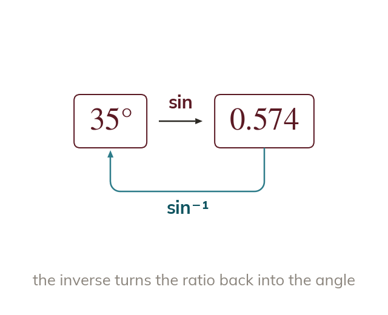

Why an inverse function is needed
sin, cos and tan turn an angle into a ratio. The inverse functions turn a known ratio back into its angle.
sin, cos and tan turn an angle into a ratio. To go the other way - turn a known ratio back into the angle that produced it - a different operation is needed: the inverse function. sin⁻¹ undoes sin, cos⁻¹ undoes cos, and tan⁻¹ undoes tan. Pressing sin, cos or tan on a ratio does not recover an angle; only the inverse (usually SHIFT + the ratio button on a calculator) does.